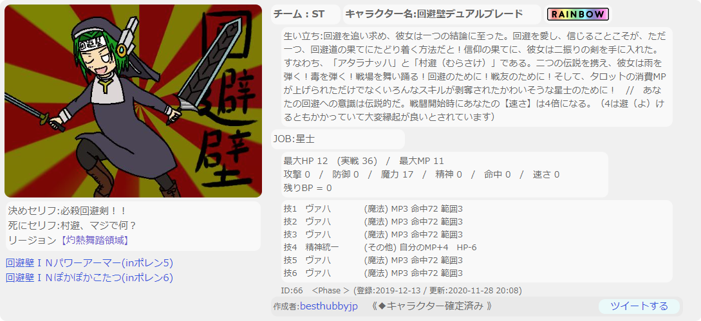

回避壁(ぽれん)
名前：回避壁↑うわっ情報量少なっ！
出演作品：ポーンさんのやった果てのヘレン（ぽれん）5～10
交流するゲームではなく、
組むビルドによって何もかもが変わるので、
設定とかもう無です。
これだけで終わるのもあれなので毎年のビルドを張っておきます。
ぽれん5
この頃はまだ長ったらしい生い立ちが面白い派閥だった。ゲームの理解ができていなかったのと、
何が起こるかわからないなんて技は開拓が進まないと思ったので、
率先して利用。結果としてはそもそもタロットは現在まで人気技です。
初戦敗退に終わったが、もう1キャラはかなりいい役回りをもらった。
ぽれん6
いわゆる生い立ち芸（今でいうゴーストコード）の運用に気づいたので、とりあえず速さを3倍にしてもらうことにした。
この定番ゴーストコードが長く続く速さに振れない縛りの始まりになるとは。
ビルドは当時のテンプレの17点ヴァハ。
星士である意味は……前回の続きですかね。
星士は弱体技が無効で、この年は強力な弱体技が出たので、
メタとしての側面もあったが、あまり流行らなかった。
2回戦で負けたと思う。確か。
ぽれん7
 この年からリージョン制が実装され、自由にチームが組めるように。僕は大型リージョンにお邪魔し、ワイワイやることにした。
ビルドは去年と同じ。完成されているので。
2回ぐらい勝ったっけ？あんまり覚えてないです。
あと去年と比べて速さの倍率が上がっています。
ぽれん8
自分でリージョンを作ることにした私です。勝ちにいくことに飽きたので、
大技を使いたい人に酬いるために
棒立ちリージョンになりました。
HP40で被ダメージ半減のジョブなら、
棒立ちしていてもそこそこ勝ち目があるからですね。
このあたりから勝敗はどうでもいいというか、
むしろ負けたいと思うようになっていきます。
勝っても別に嬉しくないというか……
ぽれん9
ポーンこいやというリージョン名でしたが、ゲームの成り立ちの事情からポーン様ご降臨くださいませという名前になった私です。
魔法防御たる精神にちょっと振り、
物理攻撃を反射できる技を連打し、
最終ターンに蘇生技を使えば勝てるという試みです。
初戦の相性がよく、1回戦を突破してしまったので
すごい気持ちになりました。
ぽれん10
先述したゴーストコードを一部以外廃止するみたいな告知があったのでおーようやく速さ振れるね！つって振りました。
この年のリージョンは新技の検証のためのビルドです。
インビジで主賓を隠す形。